# A tibble: 3 × 3
num_sims mean_x sd_x
<fct> <dbl> <dbl>
1 1000 50.1 4.91
2 10000 50.0 5.00
3 1e+05 50.0 5.0106 - 连续变量概率分布
——以正态分布为例
Hu Chuan-Peng
2023-03-29
Review
- 伯努利试验
- 二项分布
- 似然
- 模型
概率与似然
疑问：
1. 伯努利试验中的重复次数和 b(k; n,p)中的关系;
贝叶斯公式中的似然和上节课提到的似然之间的关系;
似然与概率？
伯努利试验中的重复次数和 b(k; n,p)中的关系
重复次数\(\ne\) b(k; n,p)中的n
b(k; n,p)是一个理想的概率模型，不受现实发生的次数的影响
当重复次数\(\rightarrow \infty\)时，频率\(\rightarrow \infty\)，统计规律可以用概率模型进行解释。但重复次数并不会影响二项分布的概率模型。
理想的二项分布，n=10，p=0.5
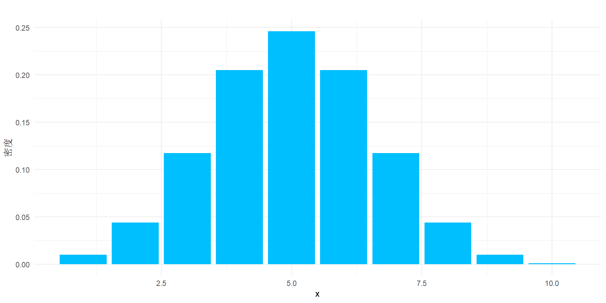当重复次数越来越多，越接近理想的二项分布
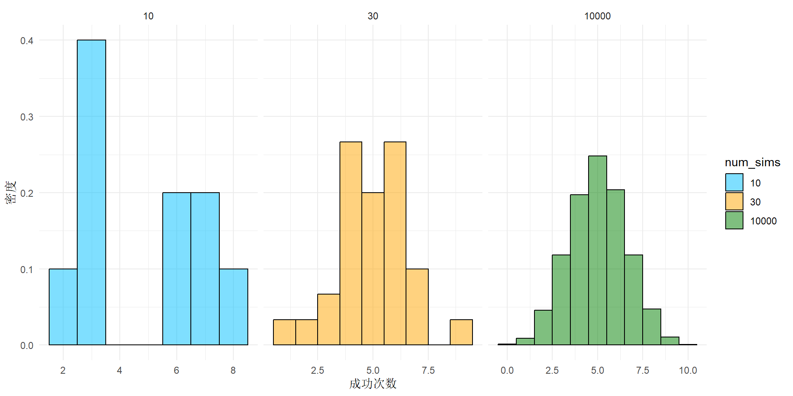贝叶斯公式中的似然和上节课提到的似然之间的关系
\[p(\theta|X) = \frac{P(X|\theta)p(\theta)}{p(X)}\]
似然是贝叶斯学派和频率学派共有的概念，上节课更多地是从频率学派的视角来看待这一概念。
频率学派认为概率是客观的，世界存在一个真值，该值可以通过最大似然法来估计出来。
而在贝叶斯学派的观念里，概率是主观的，事件发生的可能性不仅取决于我们观察到的证据，即似然，还取决于我们对该事件本身的先验观念。
似然在两者之间的差别仅体现在理念上，在数学上是等价的。
似然在何种情况下和概率是等价的
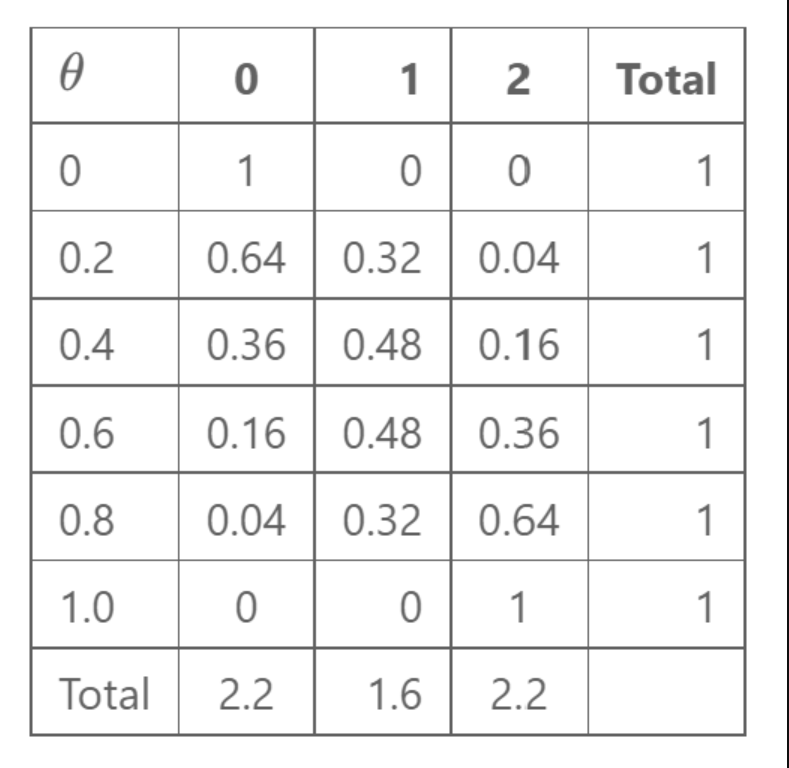- 图中可以看出为何似然之和不为1，而概率之和为1，似然之和取决于\(\theta\)的参数空间
- 当似然和概率表示同一个事件发生的可能性时，两者是等价的
- 当表示为似然函数或概率函数时，两者是不等价的。
二项分布(Binomial distribution)
- 已知伯努利试验中事件A 发生的概率p, 共进行n次独立重复的伯努利试验。
- 在n 次试验中事件A出现k次数的概率: \(b(k; n, p)\)。
- 在n 次试验中事件A出现所有可能次数的概率分布: \(X \sim b(n, p)\)。
- 当 \(n \rightarrow \infty\), \(p \neq q\), \(np \geq 5\) 且 \(nq \geq 5\) 时，事件A在n次试验中出现次数的平均数: \(\mu = np\)。
- 事件A出现次数所属分布的标准差：\(\sigma = \sqrt{npq}\)。
如果有 n 排钉子，n+1个槽，钉子每次下落都有两种可能的方向，则它落入第k个槽的概率为多少？
高尔顿钉板(Galton board)
- 高尔顿钉板演示图
高尔顿钉板(Galton board)
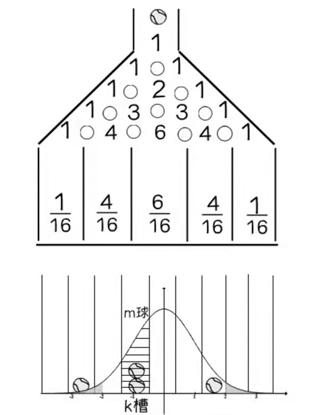直观图像上，二项分布的极限分布（\(n \rightarrow \infty\)）是一种对称钟形分布，
那么真实数据上也是如此吗？
n = 10, 100, 1000

重复次数为1000, 10000, 100000
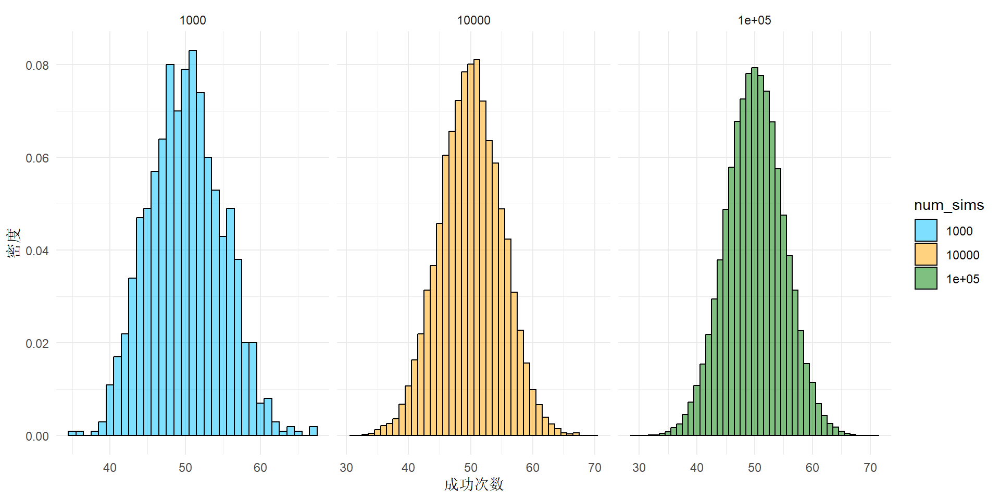
n增大,平均值趋近于\(\mu = np\), 标准差趋近于\(\sigma = \sqrt(npq)\)
掷1000次硬币，硬币正面朝上次数为500 ～ 510次时的概率：
\[ P = \sum_{i=10}^{500} \binom{1000}{i} \left(\frac{1}{2}\right)^{1000} \]
重复10000次

概率质量函数(Probability mass function, PMF)
概率质量函数是用来描述离散型随机变量的概率分布的函数，它指定了随机变量取某个值的概率。
在概率质量函数中，离散随机变量的概率由概率质量函数的值表示。
在该例子中，每一个条形图的高度表示该事件出现的概率
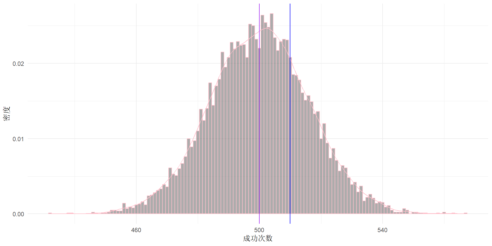\(n \rightarrow \infty\)，离散二项分布近似看作连续，此时应该如何表示概率？
连续变量的概率密度函数(Probability density function)
连续变量(Continuous Variable)
- 在一定区间内可以任意取值的变量叫连续变量，其数值是连续不断的，相邻两个数值可作无限分割，即可取无限个数值。
连续变量
\[ \downarrow \]
\[ \downarrow \]
\[ \downarrow \]
连续变量
\[ \downarrow \]
\[ \downarrow \]
\[ \downarrow \]
连续变量
\[ \downarrow \] \[ p(X|500 \le x \le 510) = \int_{500}^{510}f(x)dx \]
连续变量的概率密度函数(Probability density function, PDF)
概率可解释为随机变量所落在区间内的面积与整个曲线和𝑥轴围成面积大小的比值:
\[\frac{区间(a, b)内的曲线下面积}{f(x)与x轴所包围的总面积}\]
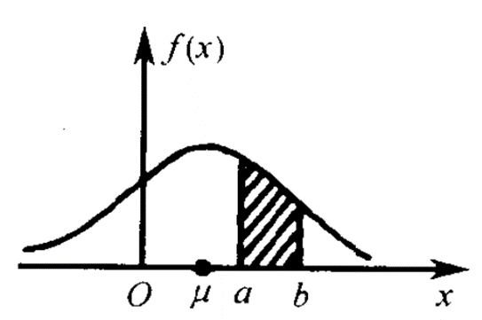连续变量的概率密度函数(Probability density function, PDF)
概率密度函数可解释为随机变量落在一个区间内的概率与这个区间大小的比值在区间大小趋向于0时的极限:
\[lim_{区间大小 \rightarrow 0}\frac{落在这个区间内的概率}{区间大小}\]
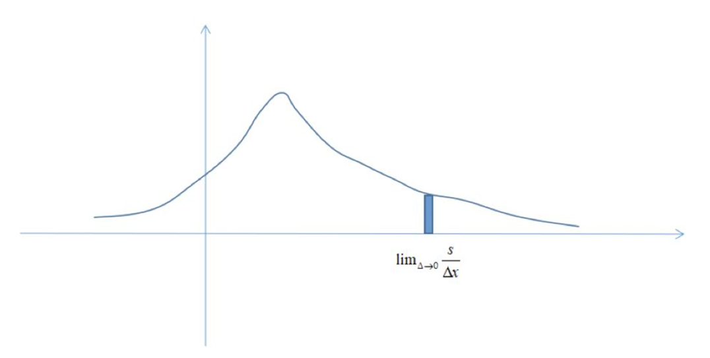概率
\[p(\Omega) = 1(所有可能事件之和的概率)\]
\[0 \le p(A) \le 1(随机事件的概率)\]
\[p(A + B) = P(A) + P(B) - P(A \cap B)(两个随机事件概率之和)\]
连续变量的概率密度函数
如果随机变量x的分布函数的曲线𝑓(𝑥)与𝑥轴围成的面积等于1，则称曲线𝑓(𝑥)为连续变量x的概率密度函数
\[p(x|x \in R) = \int f(x)dx = 1\]
连续变量的概率
𝑓(𝑥)的大小反映随机变量在x附近取值的可能性大小，称为概率密度。f(x)本身不代表概率，只是速度的变化率
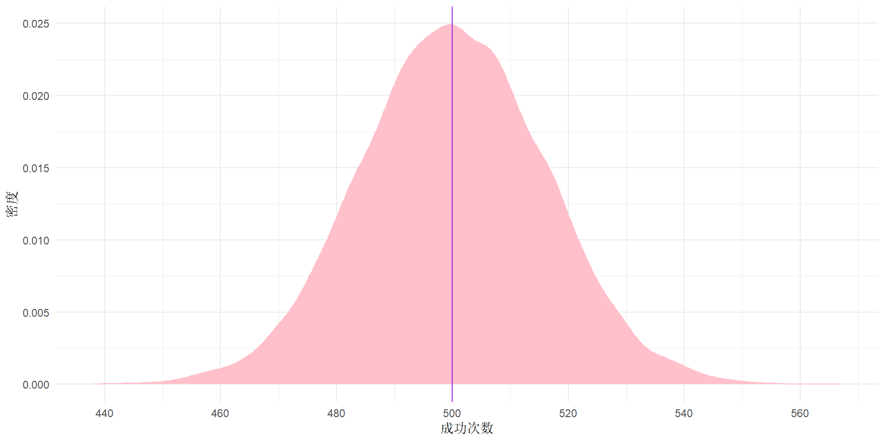连续变量的概率
连续随机变量的概率指的是x处于一个确定的取值范围内的概率，如区间(500,510)
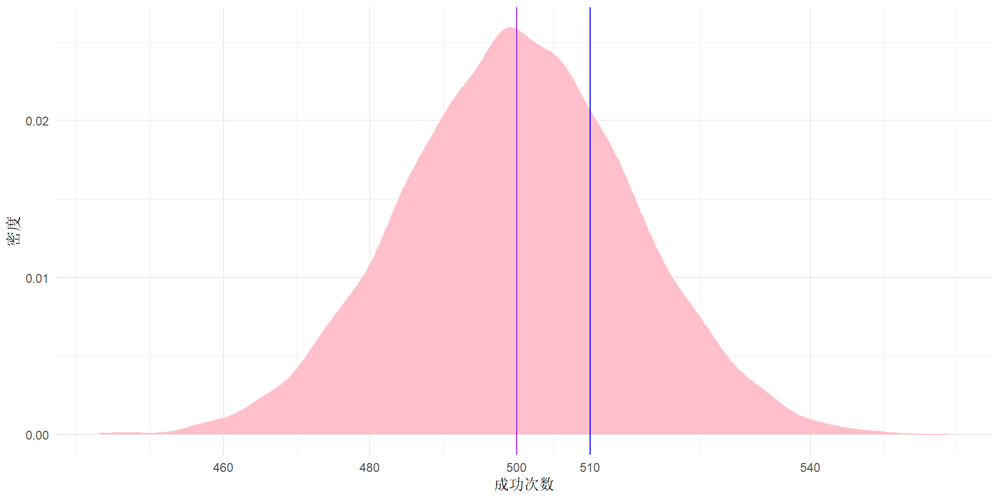概率质量函数与概率密度函数
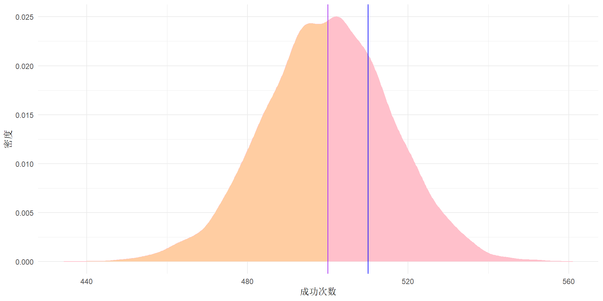概率质量函数与概率密度函数
在概率质量函数中，某事件发生的概率表示为该事件对应的y值之和。
在概率质量函数中，某事件发生的概率表示为该事件对应的曲线下面积。
由于概率质量函数中条形图宽度为1，高度为y值，概率值可以近似看作面积，由此，当x的数值由离散变为连续时，概率质量函数就成了概率密度函数
\[f(x|x \in [a,b]) = lim_{x \rightarrow 0}\sum_{a}^{b-a} p(x)=\int_{a}^{b} f(x)dx\]
连续变量的概率密度函数
\[单个取值的概率为0: f(x) \rightarrow 0\]
\[曲线包围下的所有可能的总概率：\int_{- \infty}^{+ \infty}f(x)dx=1\]
\[概率分布函数(一段区间的概率)：\]
\[F(y) = p(x \le y) = \int_{- \infty}^{y} f(x)dx\]
\[p(x_1<x<x_2) = \int_{x_1}^{x_2} f(x)dx = F(x_2)-F(x_1)\]
连续变量的概率密度函数
\[p(a<𝑋<𝑏)=𝑓(𝑥)曲线下在a 和b之间的面积: \int_{a}^{b} f(x)dx\]
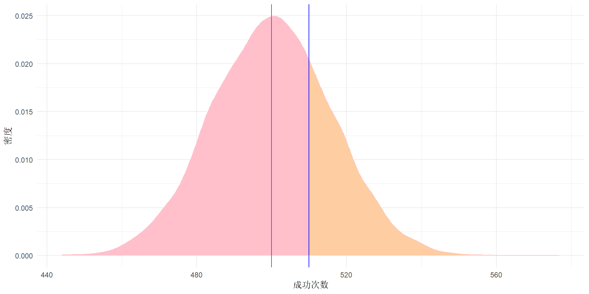连续变量的概率密度函数
\[p(𝑋< a)=𝑓(𝑥)曲线下在a 左边的面积: \int_{- \infty}^{a} f(x)dx\]
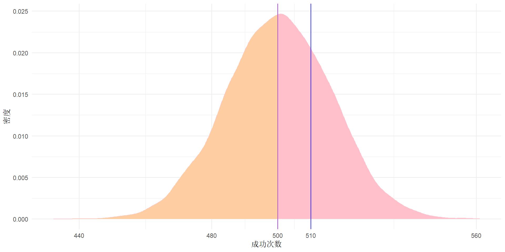连续变量的概率密度函数
\[p(𝑋< a)=𝑓(𝑥)曲线下在a 右边的面积: \int_{b}^{+ \infty} f(x)dx\]
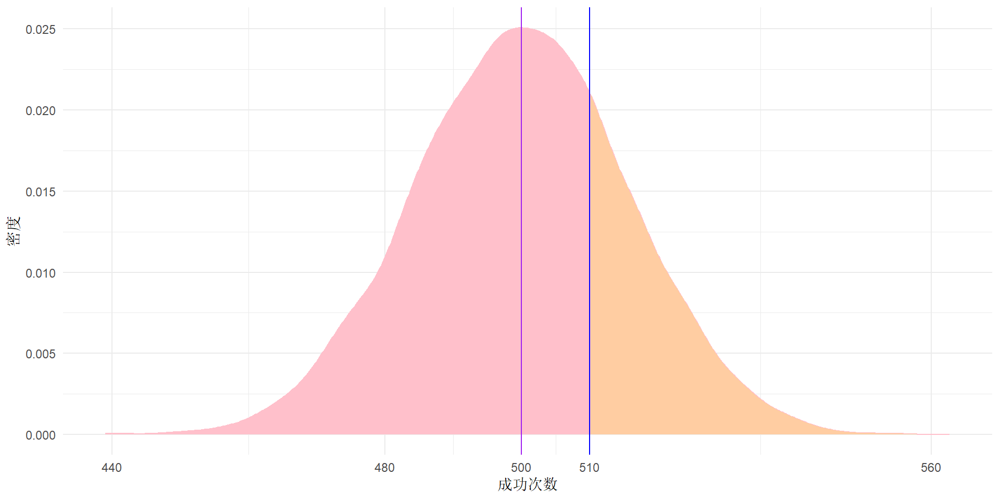正态分布
\[这种n \rightarrow \infty, p = 0.5 时的二项分布被称为"正态分布"\] \[且平均数\mu = np, 标准差\sigma = \sqrt{npq} \]
正态分布


正态分布
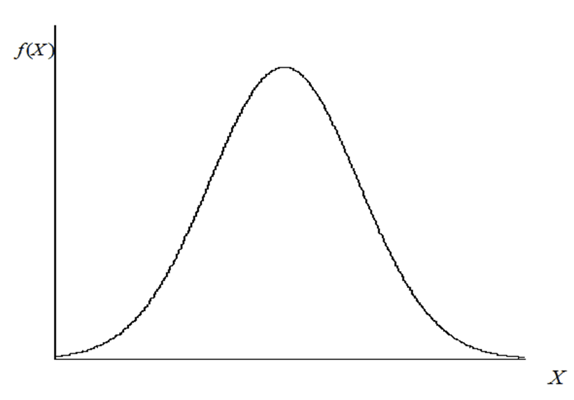\[f(x|\mu,\sigma^2) = \frac{1}{\sqrt{2\pi\sigma^2}}e^{-\frac{(x-\mu)^2}{2\sigma^2}}\]
\[X \sim N(\mu, \sigma^2)\]
正态分布的特性
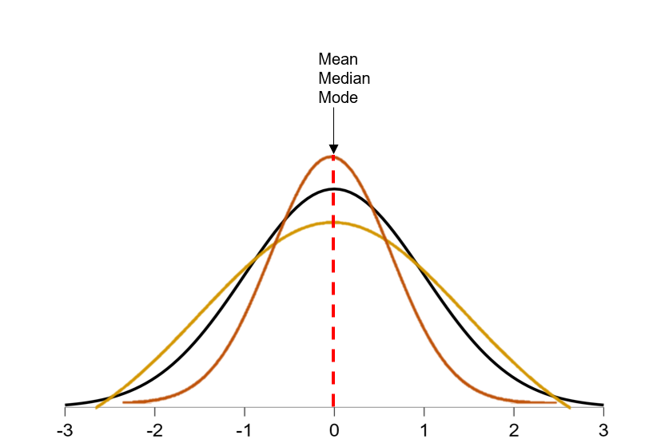正态分布曲线位于x轴上方，形式对称;
正态分布的平均数、中位数、众数相等
正态分布的特性
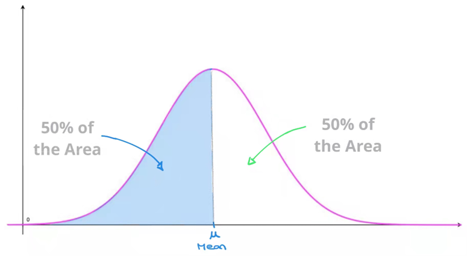- 正态分布曲线下的面积为1，左右对称，经过\(x = \mu\)处曲线将面积平分为两份，各0.5。
正态分布的特性
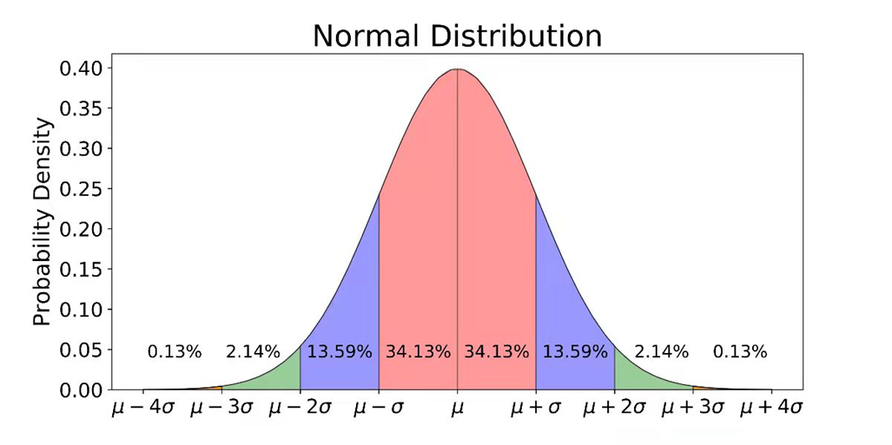- 曲线从最高点（x =𝜎）向左右延伸，拐点位于正负1个标准差处。曲线两端向x轴无限靠拢，但永不相交，意味着概率不会为0。
改变\(\mu\)值，保持相同的$ $
\[\mu=0, 0.5, 1, \sigma=1\]

保持相同的\(\mu\)值，改变$ $
\[\mu=0, \sigma=1,2,3\]
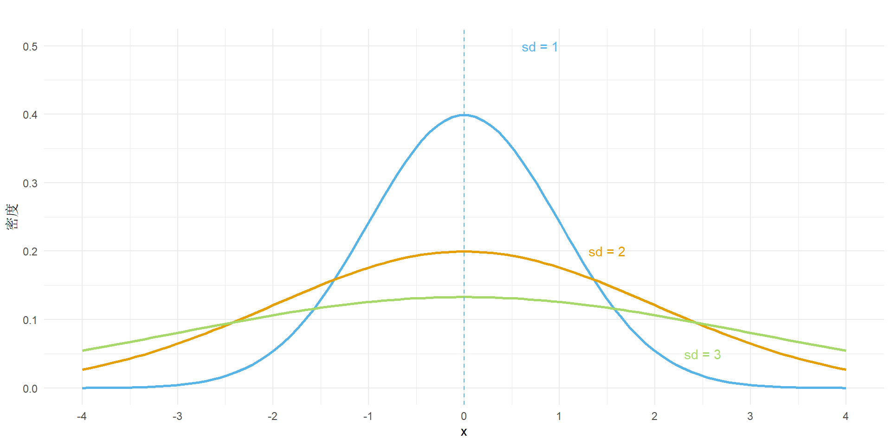
正态分布为一族分布，曲线形态由随机变量的平均数\(\mu\)与标准差\(\sigma\)决定唯一的分布。平均数\(\mu\)决定曲线的位置，标准差\(\sigma\)决定曲线的形态。\(\sigma\)越大，曲线越低，越宽阔，\(\sigma\)越小，曲线越高，越狭窄。
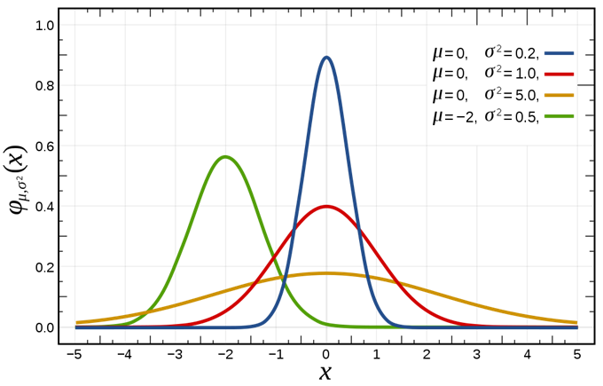概率密度函数
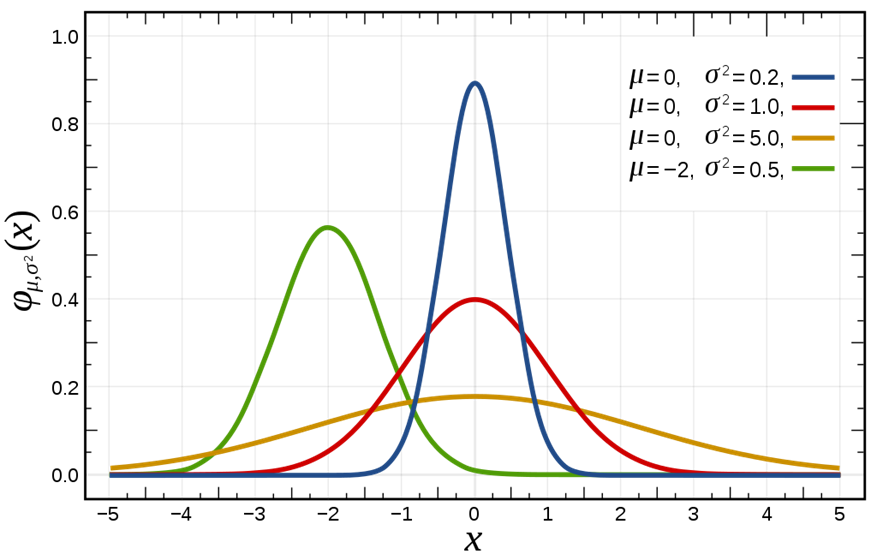
累积概率密度函数
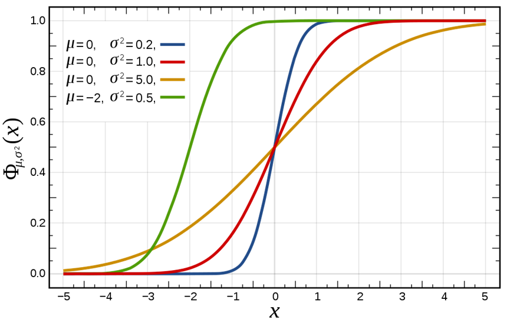
概率密度函数
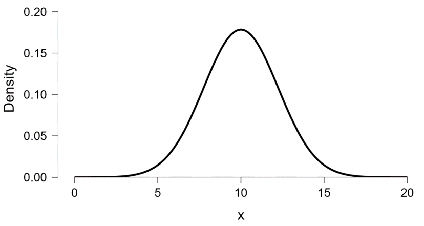
概率质量函数
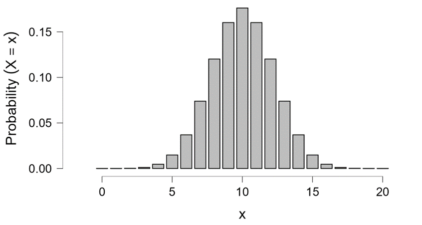
正态分布的应用
误差分布(Error distribution)
- 如果有n排钉子，n+1个槽，钉子每次下落都有两种可能的方向，则它落入第k个槽的概率;
- 最开始中心位置是真值μ (e.g., 0)，每遇到一个障碍，钉子会完全随机向左或右改变方向，将这个转向当作随机误差。
正态分布
根据高尔顿板的结果，发现二项分布的极限分布为正态分布。
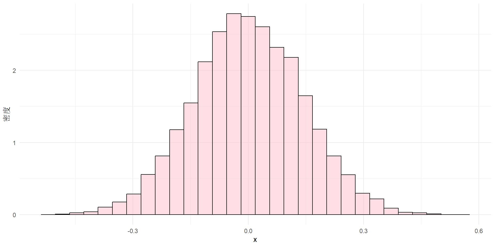
二项分布
掷硬币10次，重复此过程1000次
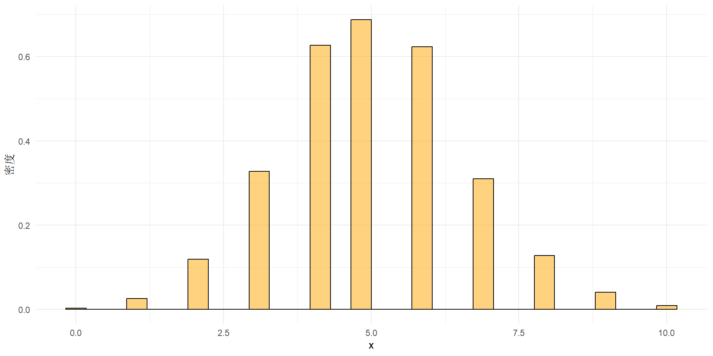掷硬币50次，重复此过程10000次
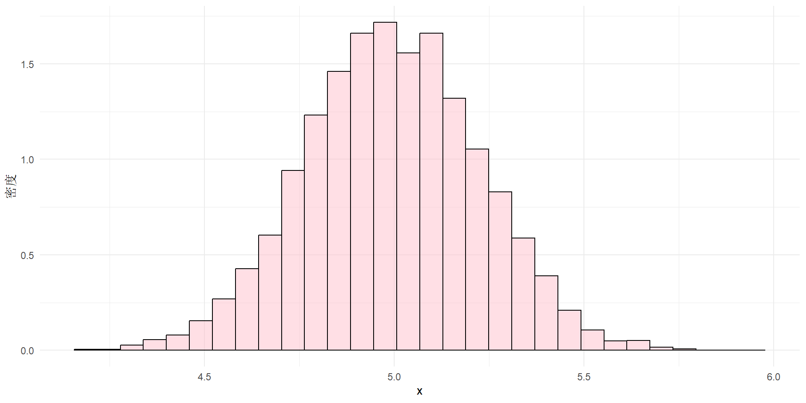均匀分布
Uniform distribution (均匀分布）
X ~ U（a, 𝑏），a = 1, 𝑏 = 10
从刻度为1到10的一条直线上抽取一个点，（有放回，抽样本n = 100）抽取100次
直线上每个点被抽中的概率相等
均匀分布
- 从刻度为1到10的一条直线上抽取一个点，（有放回，抽样本n = 100）抽取100次。
样本均值抽样分布的数字特征： \[\mu_{\bar{x}} = \frac{\sum\limits_{i=1}^{n} \bar{x}_i}{n} \]
\[\sigma_{\bar{x}} = \sqrt{\frac{\sum_{i=1}^{n}(x_i - \mu_{\bar{x}})^2}{n}} \]
- 从刻度为1到10的一条直线上抽取一个点，（有放回，抽样本n = 100）抽取100次
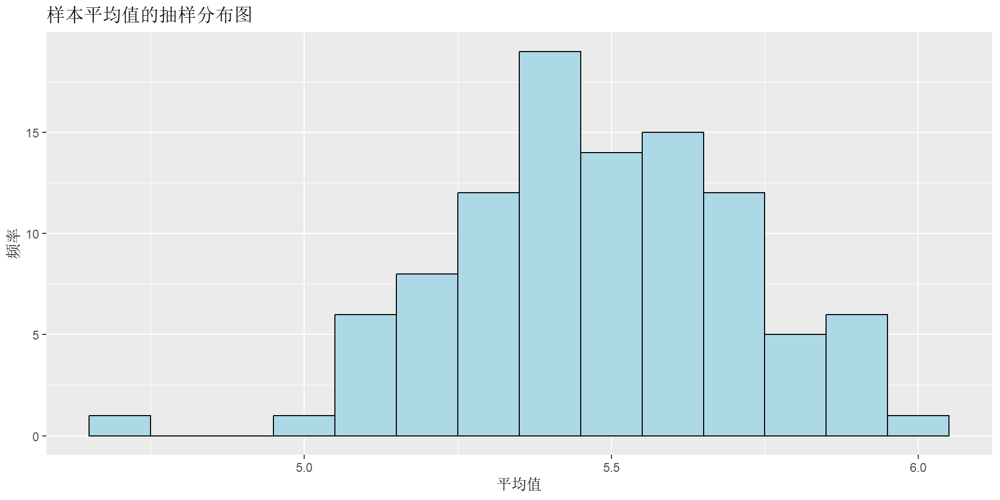
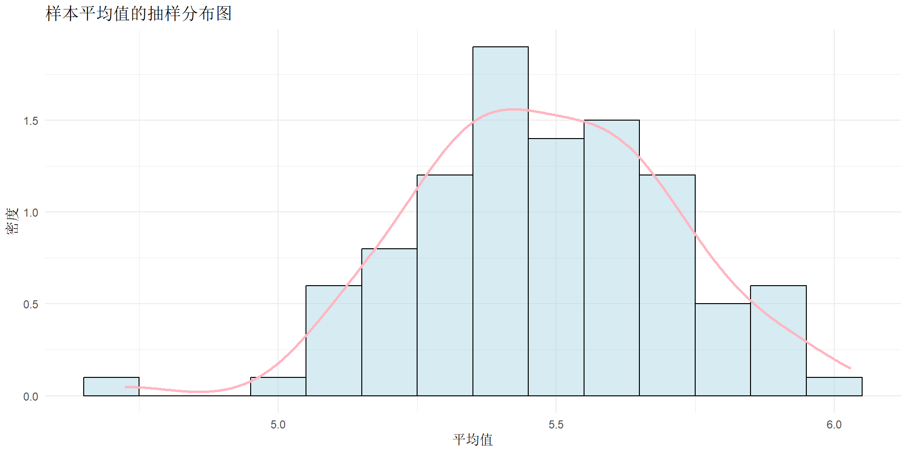
从刻度为1到10的一条直线上抽取一个点，（有放回，抽样本n = 100）抽取1000次，10000次，100000次
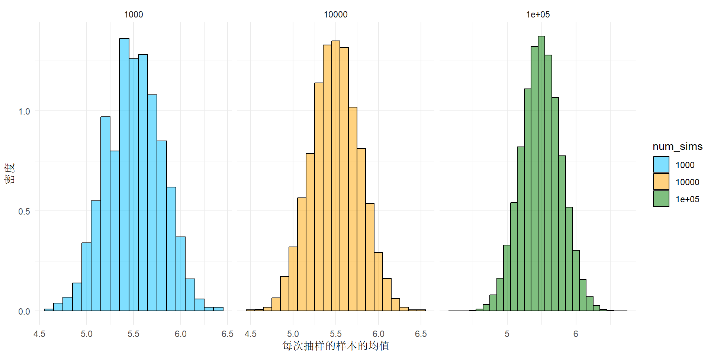泊松分布
泊松分布是一种离散概率分布，用于描述在一定时间或空间内，某个事件发生的次数。一个常见的例子是在一段时间内某个地区发生的交通事故数量。假设在某个地区，每天平均发生5起交通事故，那么我们可以使用泊松分布来计算在某一天内发生0、1、2、3等不同数量的交通事故的概率。
泊松分布
x prob
1 0 0.006737947
2 1 0.033689735
3 2 0.084224337
4 3 0.140373896
5 4 0.175467370
6 5 0.175467370
7 6 0.146222808
8 7 0.104444863
9 8 0.065278039
10 9 0.036265577
11 10 0.018132789泊松分布
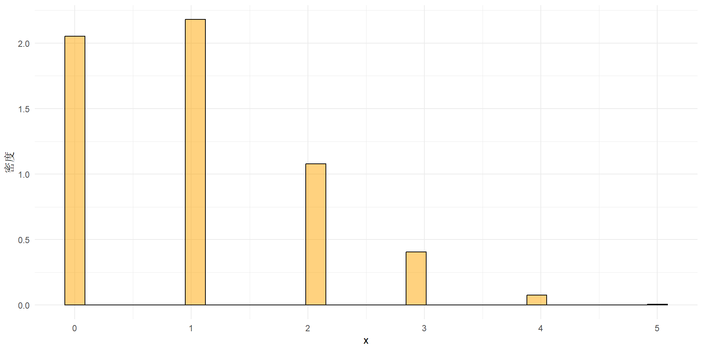gamma分布
Gamma分布是一种连续概率分布，通常用于描述正值的随机变量的分布。
在信用评分中，我们可以使用Gamma分布来描述违约概率的分布。假设我们有一个样本，其中每个人的违约概率都服从Gamma分布，我们可以使用这个分布来计算整个样本的违约概率分布。
gamma分布
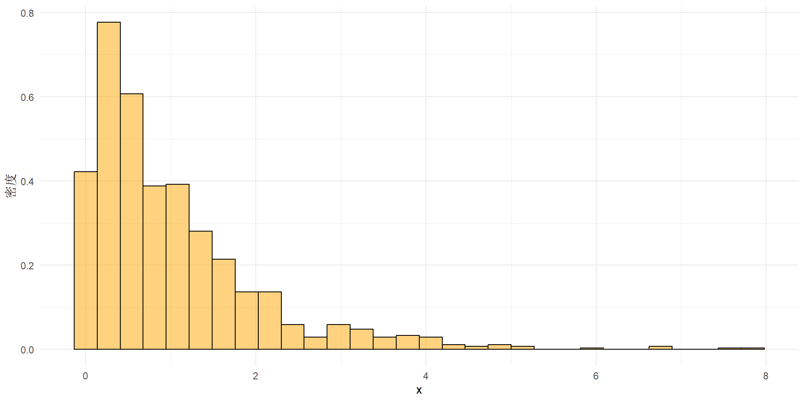中心极限定理(Central Limit Theorem)
不管原始分布是何种形式，样本均值的分布都接近于正态分布。
样本均值抽样分布的数字特征。
\[\mu_{\bar{x}} = \frac{\sum^{n}_{i=1}\bar{x}_i}{n}\]
\[\sigma_{\bar{x}} = \sqrt{\frac{\sum^{n}_{i=1}(\bar{x}_i-\mu_{\bar{x}})^2}{n}}\]
中心极限定理

正态分布应用
当总体分布未知，不断进行抽样，样本量\(n \rightarrow \infty\)时，可将抽样分布看作正态。
抽样误差的分布形态为正态分布。
影响遗传的各个因素的影响可以表达为正态分布，多个大小不一 的正态分布相加后仍为正态分布。
依据总体的均值与标准差，进行产品质量控制。